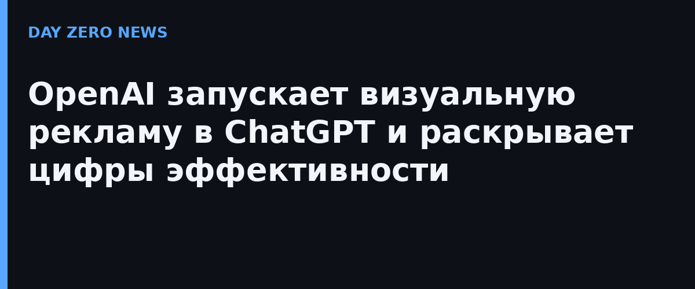

OpenAI объявила о запуске нового визуального рекламного формата внутри ChatGPT. Объявления будут показываться на этапе генерации изображений: бренды смогут демонстрировать продукты в деле — «вдохновение», «использование» или «опыт», который они дают. Компания подчёркивает: реклама чётко маркируется, отделена от создаваемого изображения и не влияет на ответы ChatGPT. Пилот стартует в США до конца октября с ограниченной группой рекламодателей.
По свежим данным OpenAI, ChatGPT охватывает 1,2 млрд человек в неделю — крупнейшая AI-платформа для потребителей. Именно масштаб компания приводит как обоснование рекламной модели: она позволяет зарабатывать на куда более широком рынке, чем одни подписки, и «приносить пользу ИИ большему числу людей».
Главная претензия рекламодателей к ChatGPT Ads раньше — почти полное отсутствие данных об эффективности. Теперь OpenAI подключает интеграции с Hightouch, Tealium и LiveRamp для передачи данных о конверсиях, поддерживает attribution-партнёров (AppsFlyer, Adjust, Branch, Singular, Kochava и др.) и эксперименты с геo-приростом (incrementality) с Haus, Measured и WorkMagic.
Ранние результаты партнёров: стоимость привлечения WeightWatchers в ChatGPT Ads на 15,3% ниже смешанного бенчмарка платного поиска (DV Rockerbox); у wellness-бренда Dose 67% инкрементальных покупок пришли от принципиально новых клиентов (WorkMagic); а 93% посетителей Portland Leather из рекламы в ChatGPT оказались новой аудиторией (Triple Whale). Пока это выборка из пилота, а не независимый аудит, — но вектор ясен: OpenAI строит полноценный рекламный бизнес рядом с поисковым.